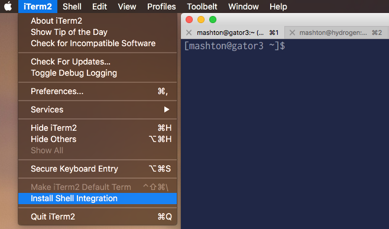

You've come a long way! Below are just a few fun or helpful things that you might want to have in place to facilitate your research.
If you're tired of entering your password every time you log into Hipergator, you can set up what's called an ssh key to give your laptop automatic login credentials. This is especially useful if you have to download lots of files at one time, since normally you have to enter your password for each file. To set up an ssh key between your computer and Hipergator, first do the following on your laptop:
$ ssh-keygen -t rsaPress enter to use the default values for every question it asks you. Then,
$ cat ~/.ssh/id_rsa.puband copy the contents of the output. Open a terminal tab on Hipergator, and open the file ~/.ssh/authorized_keys. Paste the key that you copied from your computer to the bottom of this file. That's it! Try ssh'ing from your computer to Hipergator to make sure that it worked.
If you're a mac user and you have iTerm 2 installed, you can use two utilities to save you from doing two of the most tedious tasks. imgcat is a utility to view images inside of your terminal window so you don't have to download them. it2dl is a tool for automatically downloading files from whatever computer you're working on to your laptop Downloads folder. To install imgcat and it2dl, click "Install Shell Integration" from the imgcat dropdown menu:

Then, select "remember my choice", and click "install shell integration and utilities". Then click "OK".
You will have to do this for each computer account where you want these features. In the image above, I'm doing it for my Hipergator account since that's the tab I have open. If I had my Hydrogen tab active (next to it, on the right), then the utilities would be installed on Hydrogen, etc.
Their usage is very simple- just type it2dl or imgcat and then a filename, like this:
Pretty dope, right?